性能×デザイン
建築家と建てる、
完全自由設計の家
数値が証明するその実力
大阪の狭い土地でも、
プライバシーと開放感を。
- C値0.25cm²/m²
- UA値0.26W/m²K
※UA値はPREMIUM G3（断熱等級7）の数値。間取りにより性能値が異なります。
全棟、許容応力度計算による
耐震等級3。
私たちの標準仕様です。
YOUR WORRIES
土地の条件で、
理想の家をあきらめていませんか。
- 隣の家が近くて、カーテンを開けられない家になりそう
- 狭小地・変形地だと、建てられる家が限られると思っている
- 土地代が高く、建物にかけられる予算が残るか不安
- 大手メーカーのプランが、敷地にも暮らしにもしっくりこない
- デザイン住宅は高そうで、性能もどこまで本当か分からない
その不安の多くは、設計で解けます。
DESIGN
敷地の弱点を、設計で強みに変える。
一級建築士事務所だからできる、敷地と暮らしに合わせた完全自由設計。
大手ハウスメーカーでは実現が難しい間取りにも対応します。

Coat Ps ／ コート プライベートスペース
外に閉じて、内に開く。
中庭のある都市型住宅。
庭らしい庭をつくることが難しい都心部でも、家族だけのプライベート空間＝中庭を持つことで、人目を気にしない暮らしを実現。中庭から自然な光が差し込み、部屋の中を明るく照らします。道路に面した庭と比べて、防犯面でも安心です。
-
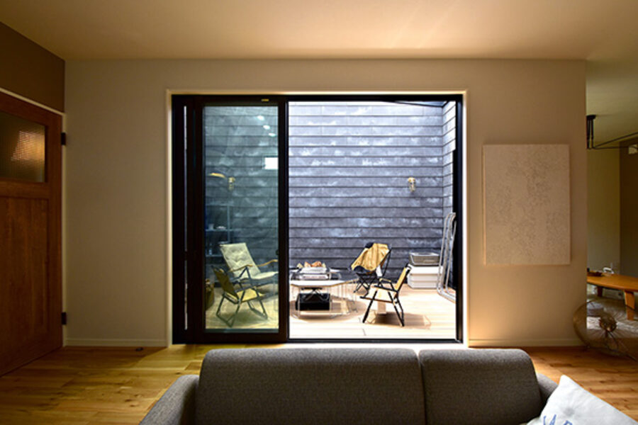
POINT 01
プライバシーと自然光を両立
外から見えない中庭は、BBQやプール遊びにも使える家族だけの空間。大きな窓から陽の光もたっぷり取り込みます。
-
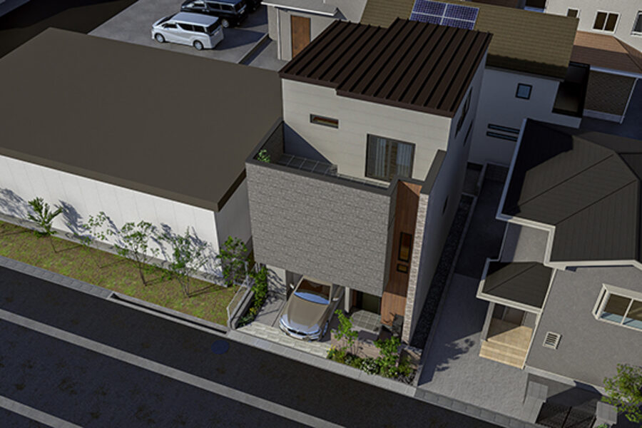
POINT 02
洗練されたデザイン
シンプルモダンをベースに、異素材をミックスした外壁デザインが得意です。暮らしやすさとおしゃれさを両立します。
-
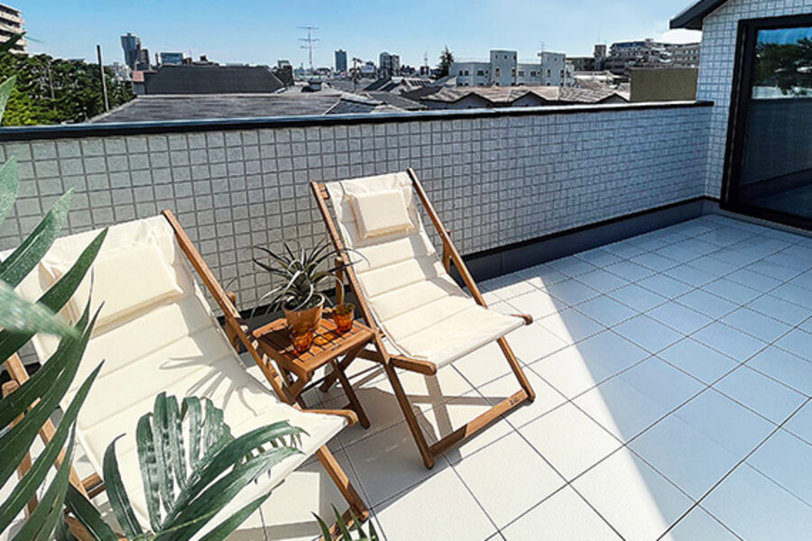
POINT 03
ハウスメーカーにはない自由度
家事ラク動線、フロアづくり、スカイバルコニーなど、空間設計にこだわった間取りをご提案します。
敷地の条件に合わせた、設計の工夫の一例です。
-

内と外が心地よくつながる中庭の家
-
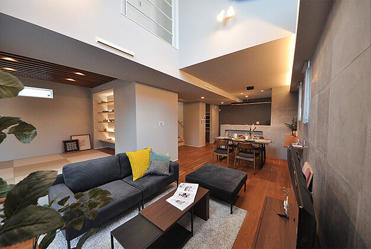
プライバシー重視のバルコニー付き。全館空調で快適な家
-
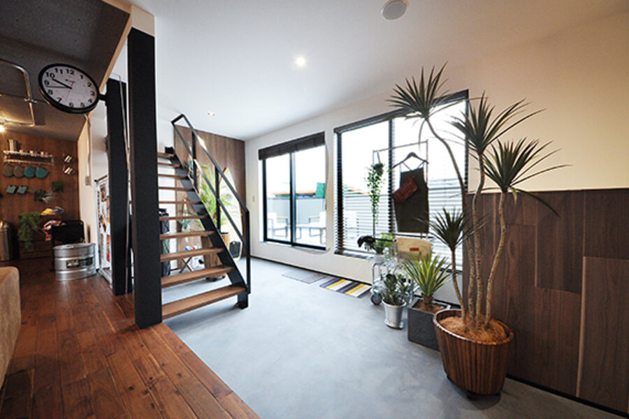
通り土間から、LDK中心のデッキへ
敷地条件と間取り図を添えた大阪・兵庫の実例に差し替え予定 要確認
PERFORMANCE
建築家の家だからこそ、
性能は数字で約束します。
C値0.25は、全棟で目指す気密の基準です。
デザインのために、性能を犠牲にしません。
 PREMIUM G3ハイグレード（断熱等級7） PREMIUM G3ハイグレード（断熱等級7） |
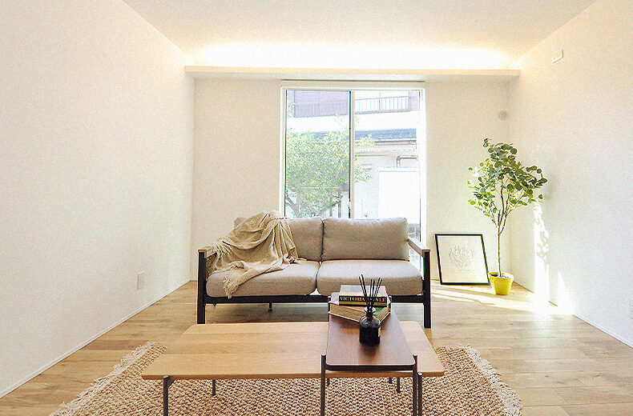 PREMIUM G2一番人気のフラッグシップ（断熱等級6） |
|
|---|---|---|
| UA値 | 0.26（HEAT20 G3） | 0.46（HEAT20 G2） |
| C値 | 0.25 | 0.25 |
| 耐震 | 耐震等級3＋許容応力度計算＋制震ダンパー | 耐震等級3＋許容応力度計算＋制震ダンパー |
| 窓 | 樹脂サッシ APW430 | 樹脂サッシ APW330 |
| 断熱 | W断熱「凄断熱」 | W断熱「凄断熱」 |
| 換気 | 第1種換気 SUMIKA VS90 | 第1種換気 SUMIKA VS90 |
| 補助金 | GX補助金160万円対応※ | GX補助金160万円対応※ |
性能値はケンデザイン設計（KD'STYLE）公式サイトの商品ラインナップより。※GX補助金の適用条件・期限 要確認
- 耐震等級3を、計算で確かめる
- 全棟で許容応力度計算を実施。最高等級の耐震等級3に、制震ダンパーを組み合わせ、繰り返す揺れにも備えます。
- W断熱「凄断熱」
- 外と内の2重の断熱で、家じゅうの温度差を小さく。夏も冬も、エアコンに頼りすぎない快適さを目指します。
- 高性能樹脂サッシ
- 熱が逃げやすい窓に、樹脂サッシ（APW430／APW330）を採用しています。
- 第1種換気
- 給気・排気とも機械で行う第1種換気（SUMIKA VS90）で、外の温度に左右されにくい空気環境に。
- 長期優良住宅が標準
- 国の基準に基づく長期優良住宅を標準とし、長く安心して暮らせる住まいをつくります。
「温度差のない快適さ」は、伊丹のまちかどモデルハウス「温度差が生まれないデザインハウス」で体感できます。
COST
気になるお金の話を、
先にオープンにします。
設計事務所の品質を、手の届く価格で。
「デザイン住宅はどうせ高い」とあきらめる前に、ご確認ください。
-
本体価格の目安
坪単価または本体価格の目安を掲載します。 要確認
-
GX補助金 160万円
国の「GX志向型住宅」の補助制度に対応。断熱・省エネなどの基準を満たす住まいが対象です。 要確認
-
光熱費まで含めて考える
高断熱・高気密の家は、毎月の光熱費を抑えられます。建てた後のランニングコストまで含めて比べることをおすすめします。
-
総額で資金計画を
土地＋建物＋諸費用の総額で、無理のない資金計画を。展示場では、資金計画・住宅ローンのシミュレーションや土地探しのご相談もできます。
WORKS
建築実例
内と外が心地よくつながる中庭の家

光と影を愉しむ家

家の中心にデッキを設けた平屋暮らし
プライバシー重視のバルコニー付き。全館空調で快適な家

飽きが少ないラグジュアリー空間

カフェテイストのナチュラルな家
お客様の声
「敷地の悩み → 設計での解決 → 住んでみての感想」の流れで2〜3件掲載予定 要確認
施工エリア：箕面市・豊中市・吹田市・池田市・茨木市・伊丹市・宝塚市・西宮市 ほか 要確認
SHOWROOM
お近くの展示場・拠点を選ぶ
地図の地名か、下のボタンを押すと拠点の情報に切り替わります。
地理院タイルをもとに作成
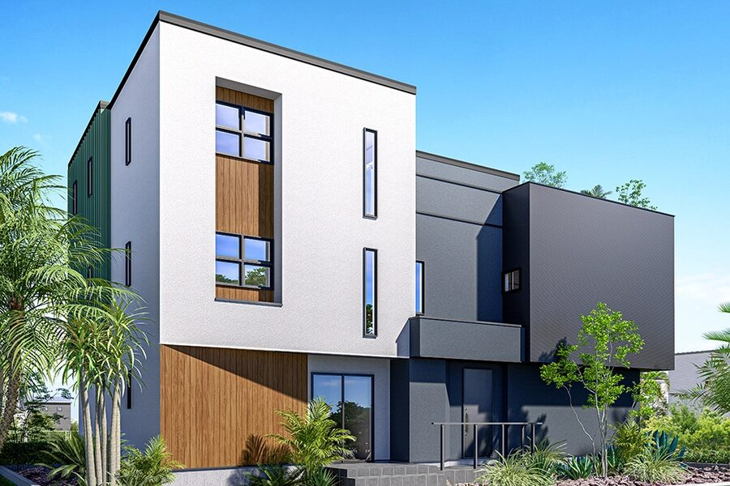
大阪府箕面市
KD'STYLE 箕面展示場
- 所在地
- 大阪府箕面市今宮1丁目1番1号
ABCハウジングウェルビーみのお内 - 営業時間
- 10:00〜17:00
- 定休日
- 毎週水曜日（祝祭日は除く）・年末年始
- 電話
- 072-735-7854
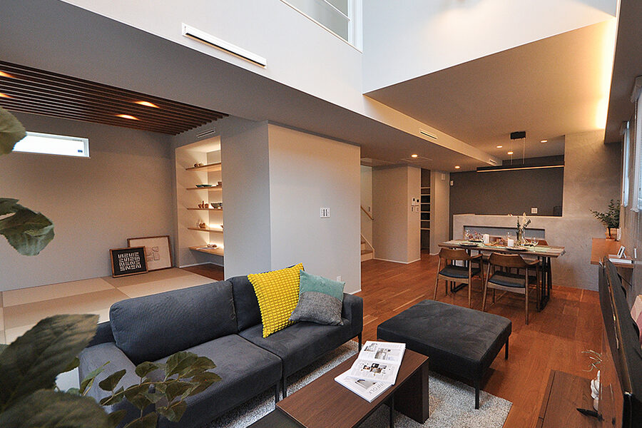
兵庫県伊丹市
伊丹まちかどモデルハウス温度差が生まれないデザインハウス
- 所在地
- 兵庫県伊丹市船原1丁目
- 営業時間
- 10:00〜17:00
- 定休日
- 毎週水曜日・木曜日
- 電話
- 072-735-7854

徳島県
ケントホームズ 徳島の展示場
-

北島店（体験型ショールーム）
板野郡北島町鯛浜字大西66-1
-
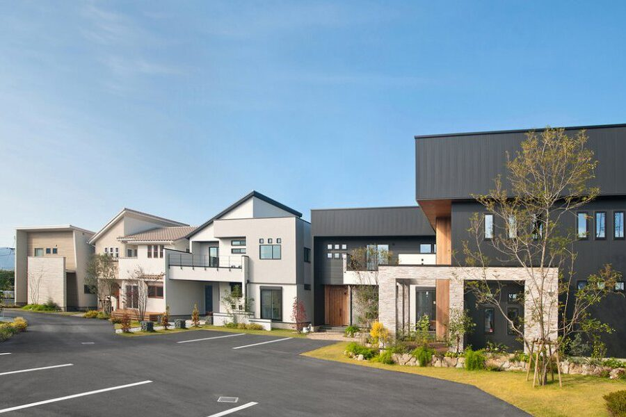
徳島南店（ハウジングギャラリー）
徳島市八万町大野180-1
-
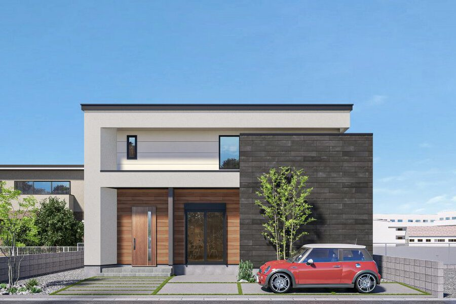
徳島市名東町2丁目147番11
-

阿南市羽ノ浦町宮倉前田13-5
営業時間 10:00〜17:00（徳島南店は〜18:00）／定休日 毎週水曜日・木曜日（祝祭日は除く）・お盆・年末年始
徳島のモデルハウスを見る・予約するABOUT
世界にひとつの家に、たどりつく。
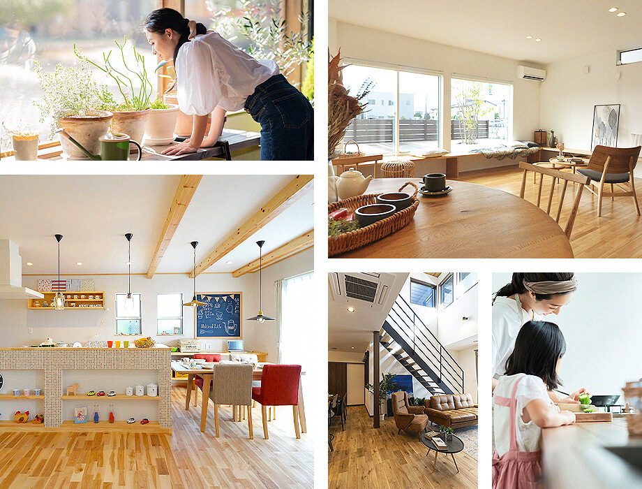
あなたが思い描いている理想の暮らしが、建築家によって整えられ、設計図に落とし込まれながら、本物のデザイン、世界にひとつの家にたどりつく。それが“KD'STYLE”の注文住宅です。
一級建築士、インテリアコーディネーター、現場監督など各分野のプロがワンチームとなり、資金計画・土地探しから設計・施工・アフターまで、トータルでサポートします。
最長60年
60年サポートシステム
※2020年10月以降のご契約が対象。適用されない商品プランもあります全棟
許容応力度計算で
耐震等級3を確認KENT HOMES
ケンデザイン設計は
株式会社ケントホームズの事業部です
理想の家づくりは、
敷地を知ることから。
箕面の展示場、伊丹のまちかどモデルハウスで、
建築家の設計と、数字で約束する性能を体感してください。